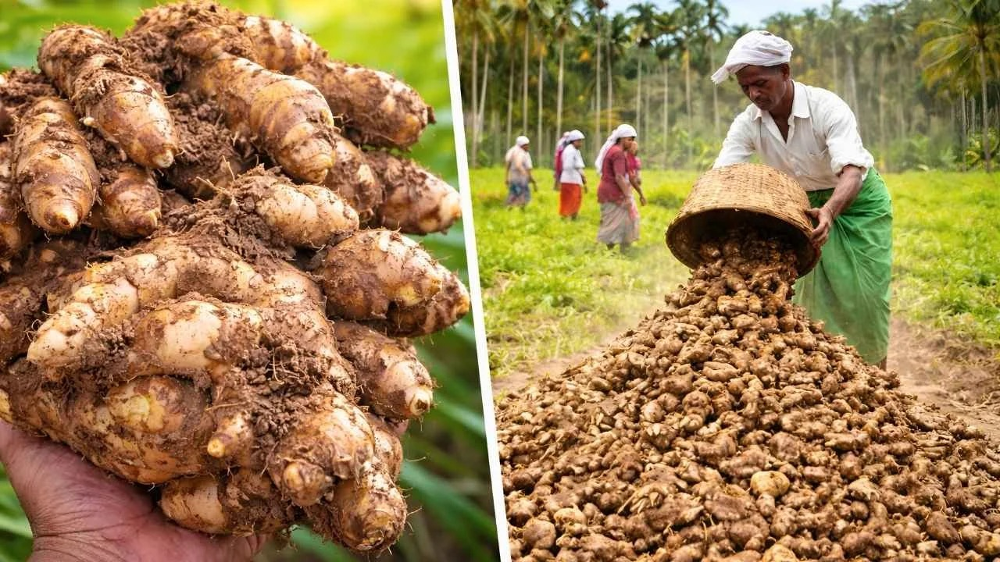
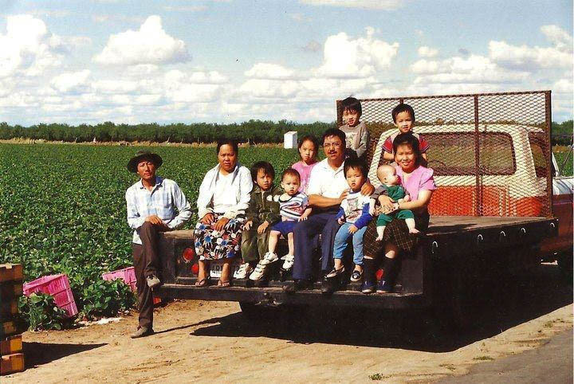
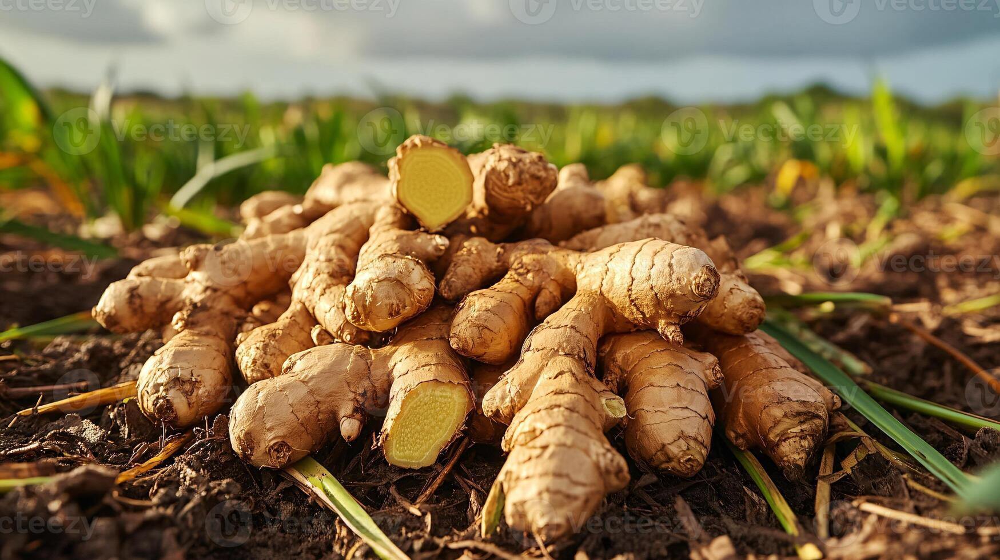

🏅
Quality First
Hand-picked to provide freshness, flavor and nutrition.
For over 20 years, we’ve been committed to bringing fresh, sustainable, and organic produce directly from local farms to your table. Our mission is simple: nourish your family while caring for our planet.
We partner with family-owned farms that share our values of sustainable agriculture, ethical practices, and environmental stewardship.

The principles that guide everything we do
Hand-picked to provide freshness, flavor and nutrition.
Supporting local farmers and strengthening community bonds.
100% certified organic without harmful chemicals.
Earth-friendly practices that preserve the environment.

Every piece of produce tells a story. When you choose GreenEarth, you’re not just buying vegetables and fruits — you’re supporting real farmers, real families, and real change in how food is grown and distributed.
Our transparent supply chain means you know exactly where your food comes from. We work exclusively with certified organic farms within a 150-mile radius to reduce our carbon footprint while supporting the local economy.
From soil preparation and seed selection to harvesting and delivery, every step is taken with care. The result? Produce that’s fresher, tastier, and better for you and the environment.
Making a difference, one harvest at a time
Environmental stewardship isn’t just a buzzword for us — it’s a fundamental part of who we are. We go beyond organic certification to actively work to minimize our environmental footprint while maximizing the positive impact we have on local ecosystems.

Dedicated people passionate about sustainable food
Visionary leader with 20+ years in sustainable agriculture.
Ensures seamless farm-to-customer delivery every day.
Drives environmental initiatives and farmer partnerships.